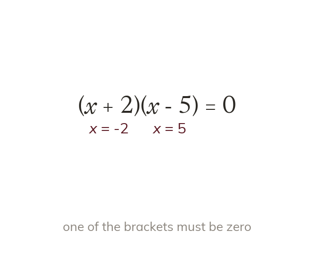
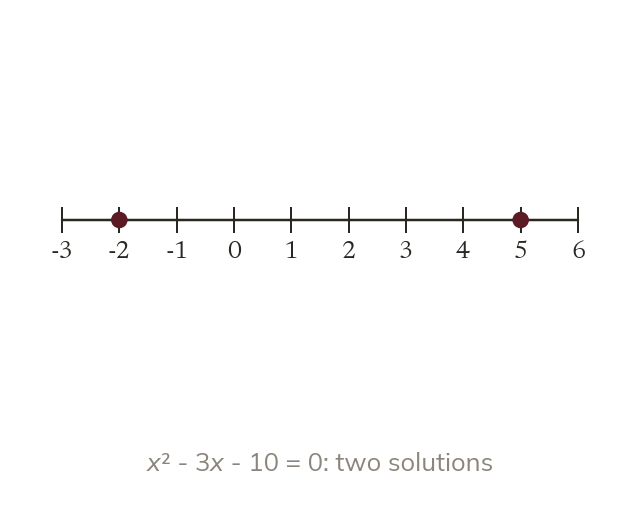
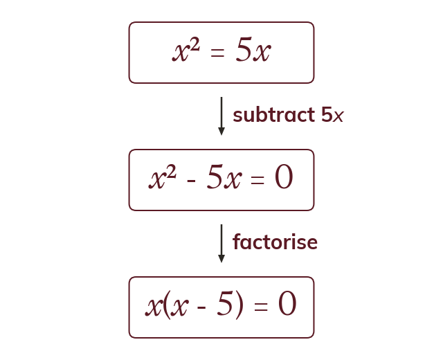
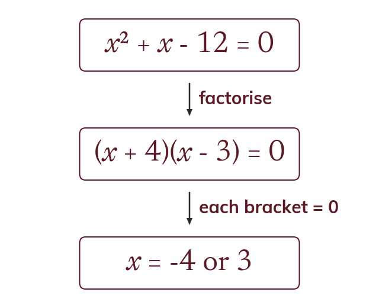

The zero-product principle
If two numbers multiply to zero, at least one is zero. So if one bracket is zero.
If two numbers multiply to make zero, at least one of them is zero. So means or
A quadratic equation cannot be solved by undoing one step at a time, because x appears twice. Factorising turns it into two brackets that multiply to zero, and that is the key.
Work down the page at your own pace. Write every answer in your book first, then click to check it.
Read each card, then follow the worked examples one step at a time.

If two numbers multiply to zero, at least one is zero. So if one bracket is zero.

Each bracket gives its own solution. A quadratic equation usually has two, and both are stated.
Pick an answer. If it's wrong, the feedback tells you which mistake it was.
Read each card, then follow the worked examples one step at a time.

Collect every term on one side so that the other side is zero. Only then factorise.

Factorise the quadratic into two brackets. Set each bracket equal to zero and solve.
Pick an answer. If it's wrong, the feedback tells you which mistake it was.
Finished? Next lesson: 9.9.1 Significant Figures and Estimating.
Log in, then search for a code to practise that skill.
Videos, worksheets and more on each part of this lesson.